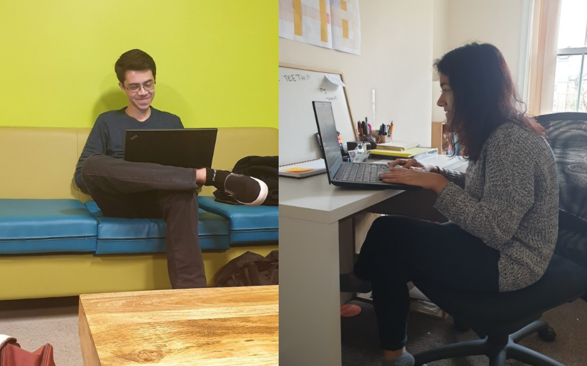
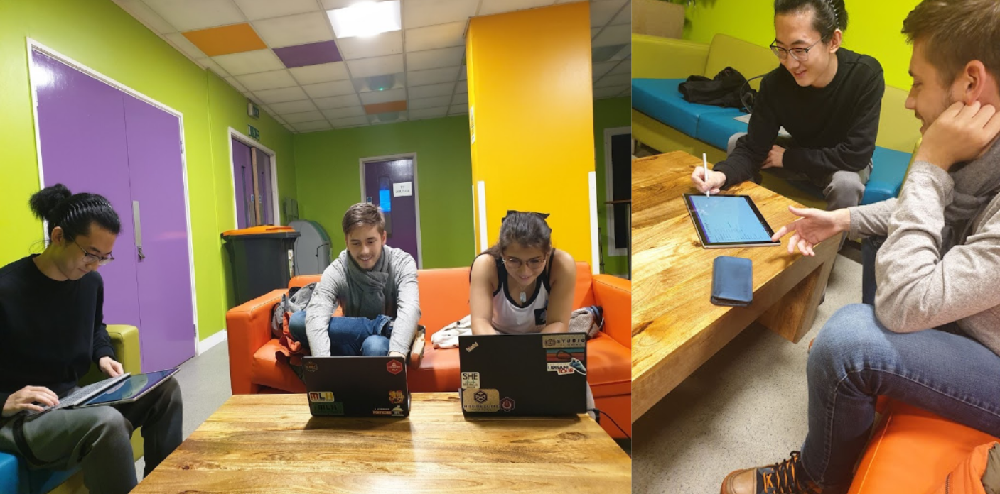

We chose to use a semi-structured interview with two pseudo-users because, according to Chapter 7.4.2 of Interaction Design by Preece et. al., a semi-structured format can help us “combine the features of structured and unstructured interviews and get more information we interested on the basic of preplanned questions.”
Do you mind being filmed while dancing?
No, because I’m already pretty used to being tracked as I own wearables, I don’t really mind as long as the data is for me only.
You mentioned wearables, what type of health data do you hope to get out of using this product?
At the moment, because of my mobility and my injury, I really hope to track the progress of my fitness adn my steps and whatnot, but I think the dancing improvements would be a cool addition as well.
Do you think you have enough knowledge on rehabilitation to track it effectively?
I’m not a medical professional so I don’t really have enough knowledge to know for sure, but I hear dancing is a great way to improve mobility, so as long as I don’t injure myself further, I think it can only bring good things.
After you leg heals, would you still be interested in using this product?
That entirely depends on how my dancing improves afterwards. If i’m really engaged I want to use it to improve.
Hi, tell me a little more about yourself and what exactly you do?
I am a dance instructor and performer. I mostly a performed when I was younger but now I am more of a instructor
Do you think dancing is beneficial to your health?
Definitely, it raises endorphins, it makes people happy, but also keeps you active, with lots of cardio. And it’s great for mental health. I never met an unhappy dancer!
What information do you track about the metrics of your practises at the moment, and what would you like to track in the future?
I have an Apple Watch, which measures some things; but when I heard about this idea, I heard I could get more information than just my step count or my calories, and it could improve my dancing, but I have no idea what to expect. Maybe it could do something for my posture?
Would you want software to improve your dance abilities?
I think that would be amazing. I am kind of apprehensive and scared because already with my smart devices, I sometimes am feel like being tracked.
What features are you expecting?
I would like to see data on my health, and tips how to improve it, as well as my dancing, with specific metrics. If I tried it, I could use it on my students to help them. I also want to see the data in an easy and digestible form.
Our interviewees: Swechha, team leader for team 28, and Joel, team leader for team 35
Team 32 preparing questions, and during the interview process